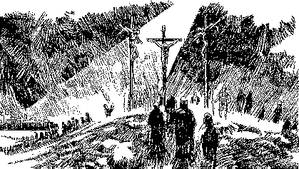

Bible Verses referring to the sinless life and atoning death of our Lord Jesus Christ as the basis our salvation:
Bible Verses referring to the sinless life and atoning death of our Lord Jesus Christ as the basis our salvation: What God has done to save the world from sin and death. (the "meritorious" cause)
What sinners must do to be personally saved from sin and death. (the "instrumental" cause)
by Bill Diehl
The good news message of the bible teaches us that the sinless life and atoning death of our Lord Jesus Christ on the cross of Calvary are what God has done to save the world from sin and death. The word of God also teaches us that personal repentance towards God and personal faith in the Lord Jesus Christ are what each of us must do to be saved from sin.
The Holy Spirit convicts all the world of sin and righteousness and judgment to come. The Holy Spirit empowers the gospel invitation to everyone in the world to personally repent of their sins and to call upon Christ as the Savior and Lord of one's life. Those who repent and believe in Him can be assured of the free gift of the forgiveness of sin and everlasting life.
John 16:8 When He (the Holy Spirit) comes, He will convict the world of guilt in regard to sin and righteousness and judgment (condemnation):
Acts 20:20-21 And how I kept back nothing that was profitable unto you, but have showed you, and have taught you publicly, and from house to house, Testifying both to the Jews, and also to the Greeks, repentance toward God, and faith toward our Lord Jesus Christ.
Thus, the word of God teaches us that Jesus Christ is both our Savior and our Lord. If He is not both then He is neither. He delivers us from the penalty of sin, and He also begins to daily deliver us from the power of sin in our lives.
The atoning work of Jesus Christ on the cross of Calvary is the reason that God can forgive and save sinners: The sinless life and atoning death of Christ on the cross has given God the legal right to bring forgiveness and eternal life to all the world. This means that without any of our good works of obedience and righteousness, the repentant believing sinner who trusts in the sinless life and atoning death of Christ on Calvary is forgiven, legally justified, and reckoned as righteous before God on the basis of Christ's atoning blood.
Repentance towards God and faith in the Lord Jesus Christ brings sinners to personal salvation: The Holy Spirit convicts sinners of their sins and leads condemned lost sinners to hear the gospel of Jesus Christ's atoning work on the cross. The Spirit invites all who hear the gospel invitation to call upon the name of Christ for the free gift of forgiveness and eternal life. This free gift of forgiveness and eternal life is promised to all who heed the invitation to come to Christ. This is called "justification by faith". All who call upon the name of Jesus Christ will then respond to the Holy Spirit's call to be baptized in the name of the Father, and of the Son, and of the Holy Spirit. All believers in Christ are born again to the newness of life as they receive the free gift of the indwelling Holy Spirit. The indwelling Holy Spirit urges the Christian believer to daily call upon the Lord in repentance and forgiveness of sin. Faith in Christ as Savior and Lord always begins to be followed by good works and a daily yielding of one's life in obedience to the commandments of God. Growing in love for God and brotherly love for one's neighbor are the work of a lifetime. All true believers in Christ will begin to live in submission to God's moral Law, the Ten Commandments.
Luke 6:46-49 "But why do you call Me 'Lord, Lord,' and do not do the things which I say? "Whoever comes to Me, and hears My sayings and does them, I will show you whom he is like: "He is like a man building a house, who dug deep and laid the foundation on the rock. And when the flood arose, the stream beat vehemently against that house, and could not shake it, for it was founded on the rock. "But he who heard and did nothing is like a man who built a house on the earth without a foundation, against which the stream beat vehemently; and immediately it fell. And the ruin of that house was great."
Bible Verses referring to the sinless life and atoning death of our Lord Jesus Christ as the basis our salvation:
These following texts clearly show us that our acceptance with God depends upon God's unmerited grace alone because of the sinless life and atoning death of our Lord on the cross of Calvary.
1 John 4:10 "In this the love of God was manifested toward us, that God has sent His only begotten Son into the world, that we might live through Him. In this is love, not that we loved God, but that He loved us and sent His Son to be the propitiation for our sins. "
1 John 2:1 My little children, these things write I unto you, that ye sin not. And if any man sin, we have an advocate with the Father, Jesus Christ the righteous: 2 And He is the propitiation for our sins: and not for ours only, but also for the sins of the whole world.
1 John 1:7 But if we walk in the light, as He is in the light, we have fellowship one with another, and the blood of Jesus Christ His Son cleanses us from all sin.
Romans 3:24-25 Being justified freely by His grace through the redemption that is in Christ Jesus: Whom God hath set forth to be a propitiation through faith in His blood, to declare His righteousness for the remission of sins that are past,
1 Timothy 2:4-6 Who will have all men to be saved, and to come unto the knowledge of the truth. For there is one God, and one mediator between God and men, the man Christ Jesus; Who gave Himself a ransom for all,
2 Corinthians 5:19-21 For God was in Christ, reconciling the world to Himself, no longer counting people's sins against them. This is the wonderful message He has given us to tell others. .... "Be reconciled to God!" For God made Christ, who never sinned, to be the offering for our sin, so that we could be made right with God through Christ.
Matthew 20:28 For even I, the Son of Man, came here not to be served but to serve others, and to give my life as a ransom for many."
1 Peter 1:18-19 For you know that God paid a ransom to save you from the empty life you inherited from your ancestors. And the ransom He paid was not mere gold or silver. He paid for you with the precious lifeblood of Christ, the sinless, spotless Lamb of God.
Romans 5:8-10 But God commended His love toward us, in that, while we were yet sinners, Christ died for us. Much more then, being now justified by His blood, we shall be saved from wrath through Him. For if, when we were enemies, we were reconciled to God by the death of His Son, much more, being reconciled, we shall be saved by His life.
Ephesians 1:6-7 To the praise of the glory of His grace, wherein He hath made us accepted in the beloved. In whom we have redemption through His blood, the forgiveness of sins, according to the riches of His grace;
Colossians 1:13-14 ......His dear Son: In whom we have redemption through His blood, even the forgiveness of sins:
Colossians 1:20 And, having made peace through the blood of His cross, by Him to reconcile all things unto Himself; by Him,
Hebrews 9:22 . . . and without shedding of blood is no remission.
Hebrews 13:12 Wherefore Jesus also, that He might sanctify the people with His own blood, suffered without the gate.
Revelation 1:5 5 And from Jesus Christ, who is the faithful witness, and the first begotten of the dead, and the prince of the kings of the earth. Unto Him that loved us, and washed us from our sins in His own blood,
Summary: God's holiness and glory can only deal with sinful man through the only Mediator between God and man, the Lord Jesus Christ who for us and our salvation, lived a sinless life and suffered and died as an atoning substitutionary sacrifice for our sins and arose again for our legal justification. The guilt of the world was imputed unto Christ on the cross of Calvary. He who knew no sin was made (reckoned) to be sin for us so that we might be made (reckoned) the righteousness of God through faith in Him. The Son of man came to give His life as a ransom for the guilt of all the world. In Christ, God has legally reconciled the world unto Himself through the suffering and death Jesus Christ on the cross of Calvary. He reconciled all things to Himself having made peace through the blood of His cross. God has commended His love toward us in that while we were yet sinners, Christ died for the ungodly.
Bible Verses referring to how to be personally saved and forgiven:
 The following bible texts describe the work of the Holy Spirit who brings personal salvation to lost sinners. He brings conviction of sin and gives enabling grace for sinners to call upon the name of Jesus for the forgiveness of sin and eternal life through repentance towards God and faith in the atoning blood of Christ on the cross of Calvary.The Holy Spirit gives the invitation to repent of our transgressions of God's holy Law and believe the gospel. He calls and enables guilty sinners who are lost in trespass and sin to call upon the name of Christ in repentance for their sins. Without this enabling work of the Holy Spirit lost sinners could never believe the gospel, call upon the name of Christ, and repent of their sins. True faith in Christ is inseparable from repentance for one's sins. It is the Holy Spirit who calls all and enables whosoever will to come to faith and repentance. The New Covenant promise is that God will forgive our sins and begin to write His holy Law upon the tables of our hearts.
The following bible texts describe the work of the Holy Spirit who brings personal salvation to lost sinners. He brings conviction of sin and gives enabling grace for sinners to call upon the name of Jesus for the forgiveness of sin and eternal life through repentance towards God and faith in the atoning blood of Christ on the cross of Calvary.The Holy Spirit gives the invitation to repent of our transgressions of God's holy Law and believe the gospel. He calls and enables guilty sinners who are lost in trespass and sin to call upon the name of Christ in repentance for their sins. Without this enabling work of the Holy Spirit lost sinners could never believe the gospel, call upon the name of Christ, and repent of their sins. True faith in Christ is inseparable from repentance for one's sins. It is the Holy Spirit who calls all and enables whosoever will to come to faith and repentance. The New Covenant promise is that God will forgive our sins and begin to write His holy Law upon the tables of our hearts.
Hebrews 8:10-12 For this is the covenant that I will make with the house of Israel after those days, saith the Lord; I will put my laws into their mind, and write them in their hearts: and I will be to them a God, and they shall be to me a people: 11 And they shall not teach every man his neighbor, and every man his brother, saying, Know the Lord: for all shall know me, from the least to the greatest. 12 For I will be merciful to their unrighteousness, and their sins and their iniquities will I remember no more.
Romans 10:12-13 For there is no difference between the Jew and the Greek: for the same Lord over all is rich unto all that call upon Him. 13 For whosoever shall call upon the name of the Lord shall be saved.
1 Corinthians 1:2 . . . to them that are sanctified in Christ Jesus, called to be saints, with all that in every place call upon the name of Jesus Christ our Lord, both theirs and ours:
Acts 20:20-21 And how I kept back nothing that was profitable unto you, but have shewed you, and have taught you publickly, and from house to house, testifying both to the Jews, and also to the Greeks, repentance toward God, and faith toward our Lord Jesus Christ.
Acts 5:30-31 The God of our fathers raised up Jesus, whom ye slew and hanged on a tree. Him hath God exalted with his right hand to be a Prince and a Saviour, for to give repentance to Israel, and forgiveness of sins.
Acts 13:38-39 Be it known unto you therefore, men and brethren, that through this man is preached unto you the forgiveness of sins: And by Him all that believe are justified from all things, from which ye could not be justified by the law of Moses.
Luke 15:10 Likewise, I say unto you, there is joy in the presence of the angels of God over one sinner that repenteth.
Luke 18:9-14 Also He spoke this parable to some who trusted in themselves that they were righteous, and despised others: 10 "Two men went up to the temple to pray, one a Pharisee and the other a tax collector. 11 "The Pharisee stood and prayed thus with himself, 'God, I thank You that I am not like other men -- extortioners, unjust, adulterers, or even as this tax collector. 12 'I fast twice a week; I give tithes of all that I possess.' 13 "And the tax collector, standing afar off, would not so much as raise his eyes to heaven, but beat his breast, saying, 'God, be merciful to me a sinner!' 14 "I tell you, this man went down to his house justified rather than the other; for everyone who exalts himself will be humbled, and he who humbles himself will be exalted."
Romans 2:4 Or despisest thou the riches of His goodness and forbearance and longsuffering; not knowing that the goodness of God leadeth thee to repentance?
Romans 3:20-26 Therefore by the deeds of the law there shall no flesh be justified in His sight: for by the law is the knowledge of sin. But now the righteousness of God without the law is manifested, being witnessed by the law and the prophets; Even the righteousness of God which is by faith of (in) Jesus Christ unto all and upon all them that believe: for there is no difference: For all have sinned, and come short of the glory of God; Being justified freely by His grace through the redemption that is in Christ Jesus: Whom God hath set forth to be a propitiation through faith in His blood, to declare His righteousness for the remission of sins that are past, through the forbearance of God; To declare, I say, at this time His righteousness: that He might be just, and the justifier of him which believeth in Jesus.
Romans 4:24 - 5:1 But for us also, to whom it shall be imputed, if we believe on Him that raised up Jesus our Lord from the dead; Who was delivered for our offences, and was raised again for our justification. Therefore being justified by faith, we have peace with God through our Lord Jesus Christ:
Romans 5:8-11 But God commendeth His love toward us, in that, while we were yet sinners, Christ died for us. Much more then, being now justified by His blood, we shall be saved from wrath through Him. For if, when we were enemies, we were reconciled to God by the death of His Son, much more, being reconciled, we shall be saved by His life. And not only so, but we also joy in God through our Lord Jesus Christ, by whom we have now received the atonement.
Galatians 2:16-17 Knowing that a man is not justified by the works of the law, but by the faith of (objective genitive "in") Jesus Christ, even we have believed in Jesus Christ, that we might be justified by the faith of (objective genitive: "in") Christ, and not by the works of the law: for by the works of the law shall no flesh be justified. But if, while we seek to be justified by (in) Christ,....
Galatians 3:11 But that no man is justified by the law in the sight of God, it is evident: for, The just (the justified one) shall live (have the verdict of life) by faith.
Galatians 3:24 Wherefore the law was our schoolmaster to bring us unto Christ, that we might be justified by faith.
Acts 26:15-20 And he said, I am Jesus whom thou persecutest. But rise, and stand upon thy feet: for I have appeared unto thee for this purpose, to make thee a minister and a witness both of these things which thou hast seen, and of those things in the which I will appear unto thee; Delivering thee from the people, and from the Gentiles, unto whom now I send thee, To open their eyes, and to turn them from darkness to light, and from the power of Satan unto God, that they may receive forgiveness of sins, and inheritance among them which are sanctified by faith that is in me. Whereupon, O king Agrippa, I was not disobedient unto the heavenly vision: But showed first unto them of Damascus, and at Jerusalem, and throughout all the coasts of Judea, and then to the Gentiles, that they should repent and turn to God, and do works meet for repentance.
2 Peter 3:9 The Lord is not slack concerning His promise, as some men count slackness; but is longsuffering to us-ward, not willing that any should perish, but that all should come to repentance.
Matthew 4:17 From that time Jesus began to preach, and to say, Repent: for the kingdom of heaven is at hand.
Mark 1:14-15 Jesus came into Galilee, preaching the gospel of the kingdom of God, 15 And saying, The time is fulfilled, and the kingdom of God is at hand: repent ye, and believe the gospel.
Acts 2:36-38 God hath made that same Jesus, whom ye have crucified, both Lord and Christ.(Ed- Christ crucified: the meritorious cause of salvation) Now when they heard this, they were pricked in their heart, and said unto Peter and to the rest of the apostles, Men and brethren, what shall we do? Then Peter said unto them, Repent, and be baptized every one of you in the name of Jesus Christ for the remission of sins, and ye shall receive the gift of the Holy Ghost.
Acts 3:18-21 that Christ should suffer, (the meritorious cause of salvation) He hath so fulfilled. Repent ye therefore, and be converted, that your sins may be blotted out, when the times of refreshing shall come from the presence of the Lord; And He shall send Jesus Christ, which before was preached unto you: Whom the heaven must receive until the times of restitution of all things, which God hath spoken by the mouth of all His holy prophets since the world began.
Acts 17:30-31 And the times of this ignorance God winked at; but now commandeth all men every where to repent: Because He hath appointed a day, in the which He will judge the world in righteousness by that man (Jesus Christ) whom He hath ordained; whereof He hath given assurance unto all men, in that He hath raised Him (Jesus Christ) from the dead.
Acts 26:19-29 O king Agrippa, I was not disobedient unto the heavenly vision: But showed first unto them of Damascus, and at Jerusalem, and throughout all the coasts of Judea, and then to the Gentiles, that they should repent and turn to God, and do works meet for repentance. For these causes the Jews caught me in the temple, and went about to kill me. Having therefore obtained help of God, I continue unto this day, witnessing both to small and great, saying none other things than those which the prophets and Moses did say should come: That Christ should suffer, and that He should be the first that should rise from the dead, and should show light unto the people, and to the Gentiles. And as he thus spoke for himself, Festus said with a loud voice, Paul, thou art beside thyself; much learning doth make thee mad. But he said, I am not mad, most noble Festus; but speak forth the words of truth and soberness. For the king knows of these things, before whom also I speak freely: for I am persuaded that none of these things are hidden from him; for this thing was not done in a corner. King Agrippa, believest thou the prophets? I know that thou believest. Then Agrippa said unto Paul, Almost thou persuades me to be a Christian. And Paul said, I would to God, that not only thou, but also all that hear me this day, were both almost, and altogether such as I am,
1 John 1:5 - 2:4 This then is the message which we have heard of him, and declare unto you, that God is light, and in Him is no darkness at all. If we say that we have fellowship with Him, and walk in darkness, we lie, and do not the truth: But if we walk in the light, as He is in the light, we have fellowship one with another, and the blood of Jesus Christ His Son cleanses us from all sin. If we say that we have no sin, we deceive ourselves, and the truth is not in us. If we confess our sins, He is faithful and just to forgive us our sins, and to cleanse us from all unrighteousness. If we say that we have not sinned, we make Him a liar, and His word is not in us. My little children, these things write I unto you, that ye sin not. And if any man sin, we have an advocate with the Father, Jesus Christ the righteous: And He is the propitiation for our sins: and not for ours only, but also for the sins of the whole world. And hereby we do know that we know Him, if we keep His commandments. He that saith, I know Him, and keeps not His commandments, is a liar, and the truth is not in him.
However, the Holy Spirit does not force anyone to repent and believe in Christ. Those who resist the gospel invitation of the Holy Spirit are willfully rejecting salvation and will be eternally lost.
John 3:19-21 And this is the condemnation, that light is come into the world, and men loved darkness rather than light, because their deeds were evil. 20 For every one that doeth evil hateth the light, neither cometh to the light, lest his deeds should be reproved. 21 But he that doeth truth cometh to the light, that his deeds may be made manifest, that they are wrought in God.
Acts 7:51 (Stephen speaking to the council) . . . .Ye stiff-necked and uncircumcised in heart and ears, ye do always resist the Holy Ghost: as your fathers did, so do ye.
Luke 13:34-35 O Jerusalem, Jerusalem, which killest the prophets, and stonest them that are sent unto thee; how often would I have gathered thy children together, as a hen doth gather her brood under her wings, and ye would not !! 35 Behold, your house is left unto you desolate: and verily I say unto you, Ye shall not see me, until the time come when ye shall say, Blessed is He that cometh in the name of the Lord.
Summary: For all have sinned and continually fall short of the glory of God, being justified freely by His grace through the redemption that is in Christ Jesus whom God has set forth as a propitiation by faith in His blood through faith to demonstrate His righteousness that He might be just and the justifier of the repentant sinner who has faith in Jesus. To him who does not work, but believes on Him who justifies the ungodly, his faith is accounted for righteousness. Righteousness shall be imputed to us who believe in Him who raised up Jesus our Lord from the dead, who was delivered up because of our offenses and was raised because of our justification.
Any "gospel" which denies that our forgiveness and acceptance with God are made possible only through faith in the sinless life and atoning shed blood of Christ alone is a denial of the true meaning of the Cross and robs us of our assurance and confidence before the holiness of God.
Only the assurance that Christ has made the legal atonement for our sins will give us confidence and assurance of the forgiveness of our sins and eternal life at the hour of our death or if we are alive at the coming final judgment day at the end of the world. All other ground is sinking sand.